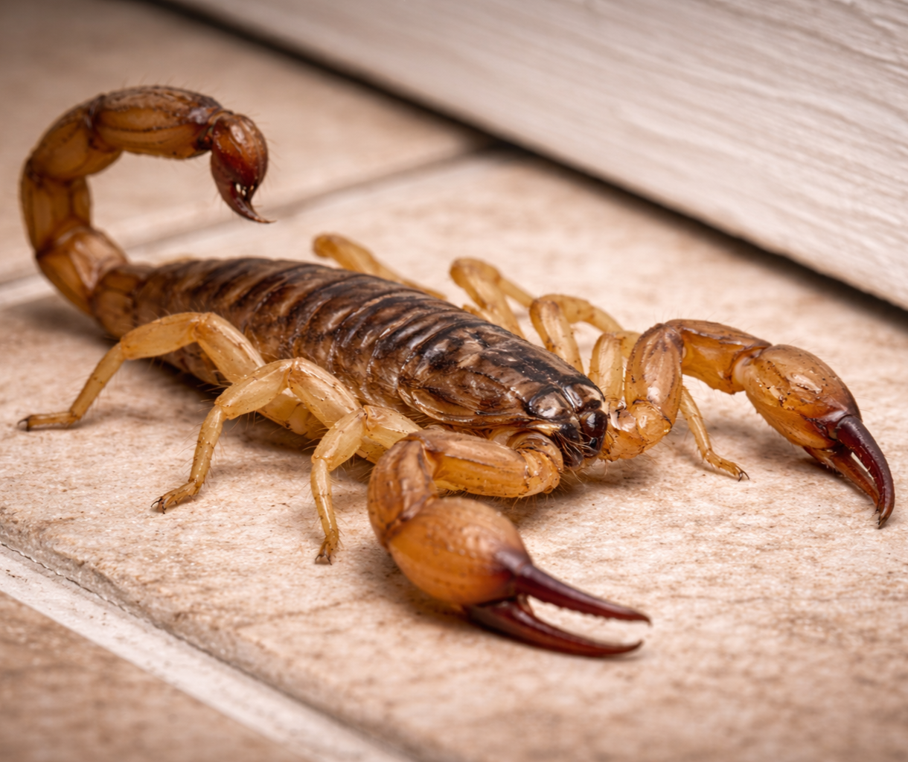

Control Profesional de Plagas en Puerto Rico

El escorpión es un arácnido (no es insecto) relacionado con arañas y ácaros. Se caracteriza por su cuerpo segmentado, pinzas delanteras y una cola curva con aguijón venenoso.
En Puerto Rico existen especies de escorpiones, aunque no son tan comunes dentro de estructuras como otras plagas. Generalmente habitan en áreas exteriores, debajo de piedras, madera acumulada o escombros.
La picadura de un escorpión puede causar:
En personas sensibles, niños pequeños o adultos mayores, puede requerir atención médica. Aunque la mayoría de las especies locales no representan riesgo mortal, sí deben tratarse con precaución.
En Bugs Or Us PR realizamos inspecciones detalladas para identificar puntos de acceso y condiciones favorables, aplicando tratamientos dirigidos y estrategias preventivas para proteger su hogar o negocio de forma responsable y segura.
Solicitar Servicio por WhatsApp